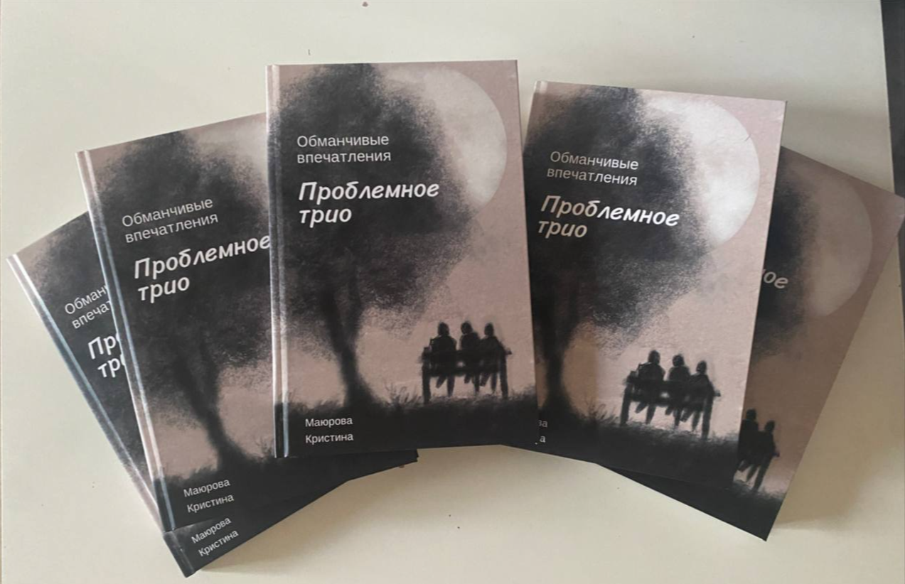
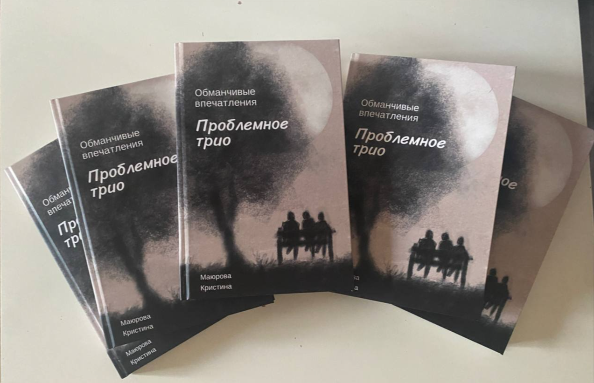

Подростковый роман «Обманчивые впечатления. Проблемное трио»
Первое впечатление всегда оставляет отпечаток и влияет на дальнейшее общение с человеком, но может ли оно быть обманчивым?
Три подростка – Кьяра, Барти и Эван встретились при довольно странных обстоятельствах. У каждого из них свои проблемы, свои тайны. Будут ли они мешать общению молодых людей? Или наоборот сплотят и сделают лишь сильнее?


Начало книги:
"Какой же сегодня необычный вечер! Возвращаясь домой после четырех пар и отлично прошедшего семинара, я встретила в лифте симпатичного парня.
Вы когда-нибудь смотрели на человека и задумывались, как он живет? Меня такие мысли посещают постоянно. Вот стою я, жду лифт и размышляю. А на каком этаже он может жить? Какую музыку любит слушать? Каких людей встречал на своем пути? Какие ситуации пережил? Вообще это довольно интересно и забавно. Вот идешь и придумываешь историю жизни человека, которого вовсе не знаешь.
Так вот, этот высокий темноволосый парень почему-то произвел на меня неизгладимое впечатление. Молодой человек выглядит так, как будто его жизнь прекрасна, и он занимается любимым делом, наслаждается каждым моментом и слушает какую-то задорную музыку, поднимающую настроение. Видимо, недавно переехал в наш дом, возможно, с семьей или друзьями, ведь до этого я его никогда не видела."